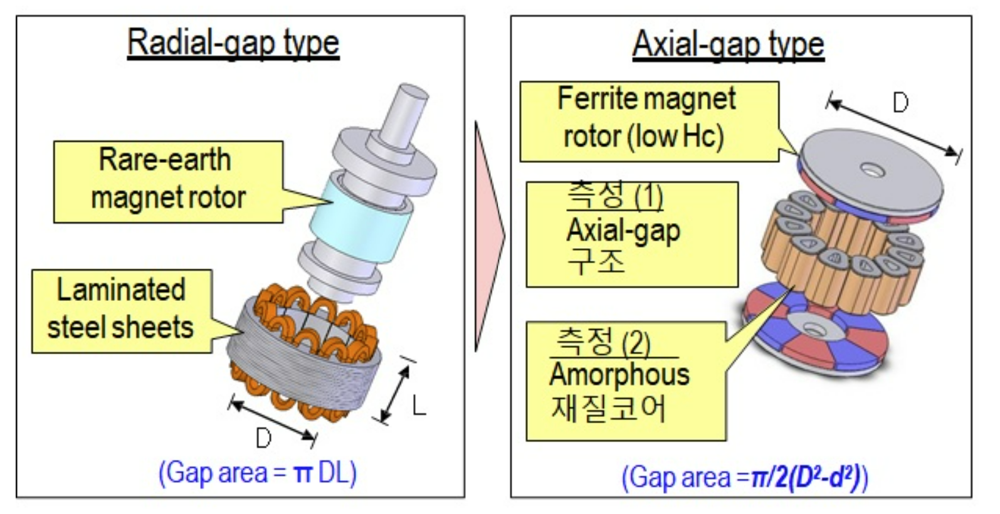
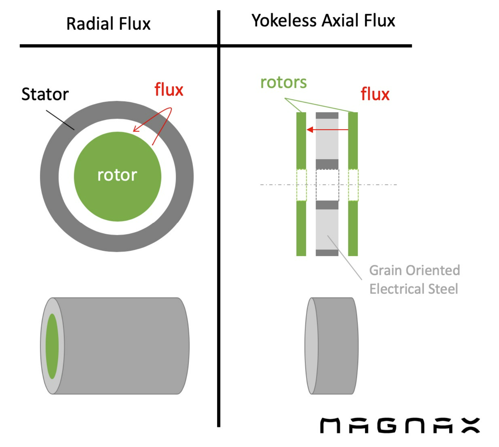
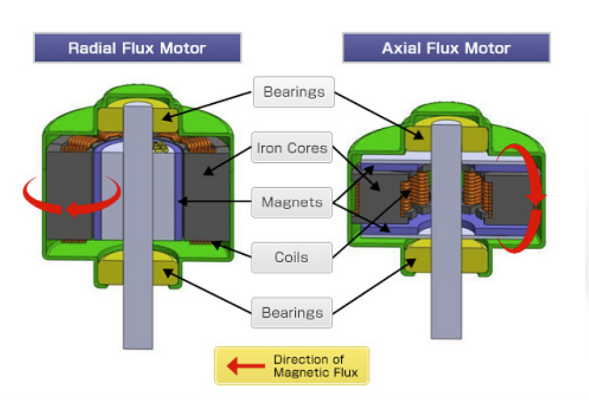

Ref : http://www.eflow.kr/bbs/board.php?bo_table=livesbody&wr_id=6

https://www.magnax.com/magnax-blog/axial-flux-vs-radial-flux.-4-reasons-why-does-axial-flux-machines-deliver-a-higher-power-density
https://www.emworks.com/blog/electromechanical/axial-and-radial-flux-permanent-magnet-machines-what-is-the-difference
축방향 자속 모터의 핵심장점은 회전자가 방사형과 비교 고정자 내부나 외부가 아니라 축회전방향으로 회전하기 때문에 더 큰 직경을 갖는다는 것이다. 토크는 힘에 반지름을 곱한 것과 같습니다. Axial-flux 설계를 통해 더 높은 토크를 얻을 수 있 다. 이는 동일한 영구 자석 및 구리 권선 에 비해 더 많은 토크를 얻을 수 있음을 의미합니다. 축방향 자속 모터 설계의 이러한 측면은 일반적으로 기존 방사형 모터에 비해 30% 이상의 토크 밀도를 얻을수 있다.
Electrical machines can be classified into two categories - radial and axial flux machines. Radial flux machines are more common and are in use for long time. Though axial flux machines are not that new, their use has been increased only during the past two decades. The difference as their names imply is that in axial flux the magnetic flux direction is parallel to the machine rotation axis whereas in radial flux machines, the magnetic flux direction is radial.


